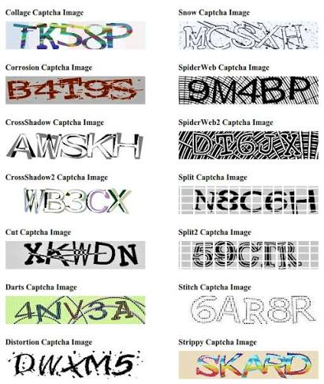
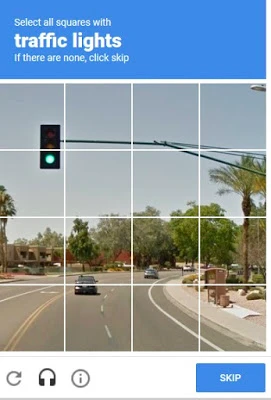
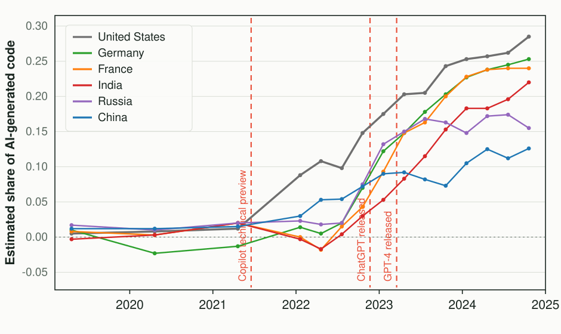
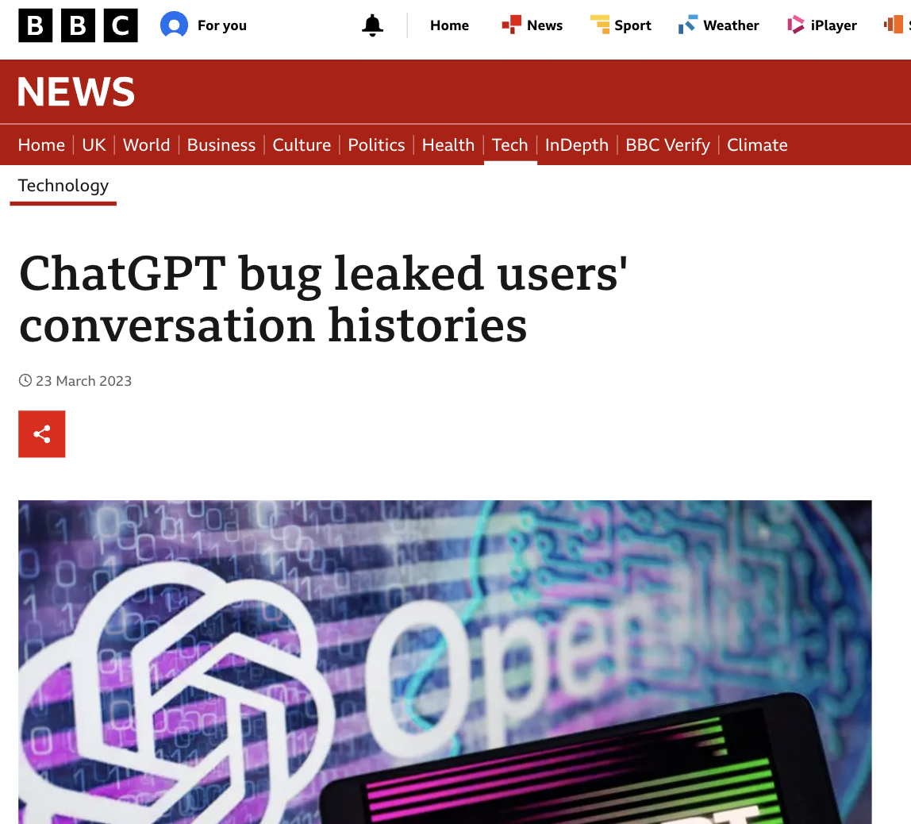
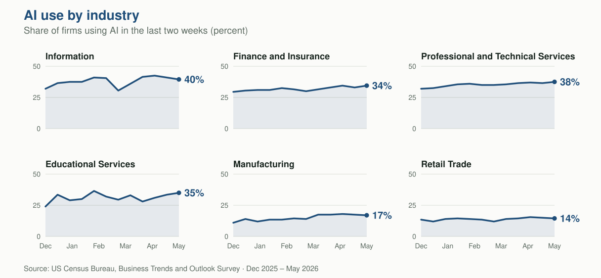
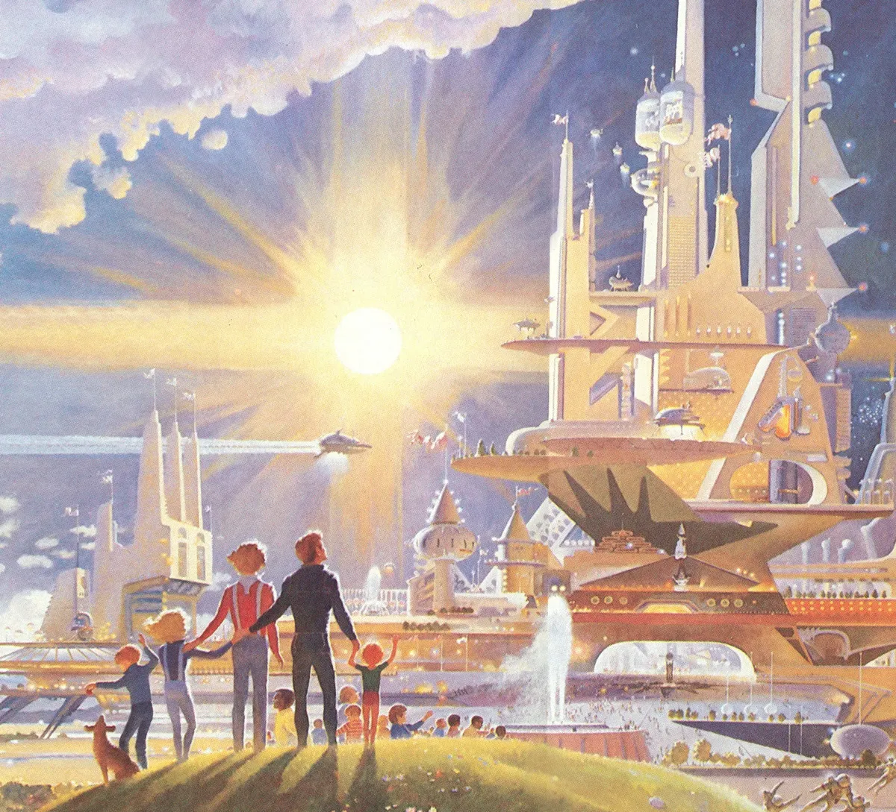

High School of Dundee
An Introduction to
Artificial Intelligence
Shahadat Hasan
Agenda
- 1What is Artificial Intelligence?
- 2How is AI changing industry?
- 3Hot topics: Cheating and Data Security
- 4What does the future look like?
- •Questions
Before we start
Two quick
reminders
Reminder 1
Everyone comes to AI with a unique perspective.


Reminder 2
Goals of today
Introductory
and simplified
No prior knowledge needed. We will trade some precision for clarity.
No silly
questions
If you're wondering it, someone else is too.
What is the best way to go on the journey
of explaining the origins of AI?
Remember Clippy?
Was Clippy AI?
No — Clippy was what came before AI.
So how did Clippy work?
How Clippy worked
A big list of rules
this document?"
store my file?"
When rules work well
Where do rules work — personalising experiences
Rules Engine if likes red → show red
if likes blue → show blue
When rules break down
Real people are more complicated.
Rules Engine
The list of potential rules is infinite.
And that's why Clippy wasn't useful — and was retired.
A ladder of intelligence


Section
How AI is created
Practice makes perfect
How does it learn?
Learning from examples
Show it the same thing over and over, with the right answer attached, until the pattern sticks.
- The internet
- Books
- But how do we get it to read?
You've helped train it

Reading the squiggly word

Tapping the traffic lights
Every one of these was a tiny piece of homework — done for the AI.
And this is what all that homework bought
Practice makes perfect
How does it learn?
Learning from examples
Giving it tests and answers.
Learning from feedback
For everything that has no single right answer — a thumbs up or thumbs down, millions of times, nudging it toward better.
The shift
The AI shift
of rules
AI learns through billions of interactions and forms its own logic.
The ladder, revisited
Questions so far?
How AI is changing industries
around the world
What we have spoken about so far are…
How the whole industry is built
The AI ecosystem is not just LLMs


The same picture, just for the UK

Let's focus on two extremes
The logical end
The logical first step
Coding — where AI was first adopted, back in 2021.
Almost 30% of new code in the US is now written by AI.

Share of AI-generated code, by country · Complexity Science Hub / Science
The other extreme
The arbiter of creative AI progress is…
the "Will Smith Eating Spaghetti"
benchmark
The same test, year after year
Section
Hot topics
Security and Cheating
Security
The ChatGPT breach

For a short window, people could see the titles of strangers' chats. It made headlines everywhere.
Put it in perspective
But this isn't a new problem
- Any software that sends information to a server that isn't local carries a risk that the data can be hacked.
- AI does not fundamentally change this problem.
- Being online more has caused the threat to increase.

World's Biggest Data Breaches and Hacks · Information is Beautiful
Practical protection
Two ways to safeguard your data
1. Check the account type
Use plans and terms where your data is not used to train the model.
2. Local models
Run the model on your own servers, so nothing ever leaves the building.
Where the model actually sits
Section
Cheating using AI
How we monitor performance
How tech companies judge engineers using AI
Engineers were judged by lines of code written by hand.
Engineers were judged by the Impact their code made.
AI allowed them to do less monotonous tasks, so they could focus on more interesting problems and come up with creative solutions with the help of AI.
Job threats / opportunities
What does this mean for employment after school?
Every one of these now involves AI.

What does an AI future look like?
Two possible futures


Now
A serious attempt to look ahead · ai-2027.com
AI 2027
Nick Bostrom's 2014 thought experiment
What if a super-intelligent Clippy is given one goal — make as many paperclips as possible?
Interesting byproducts to its goal.
So what is the learning from
this thought experiment?
The technology isn't good or bad.
What matters is that we give it the right goals.
Intelligence and values are independent axes.
Imagine
Solving mathematical equations
Curing Cancer and Alzheimer's
Democratising creative resources
Knowing whether we're alone in the universe
Education access for all children
Whether we end up in utopia or disaster
doesn't depend on the technology.
It depends on the people using it.
It always has.
…and the people creating this will walk into
this very school tomorrow morning.
Questions